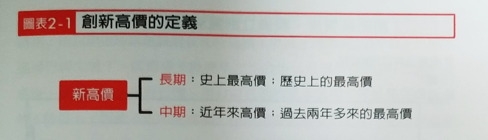
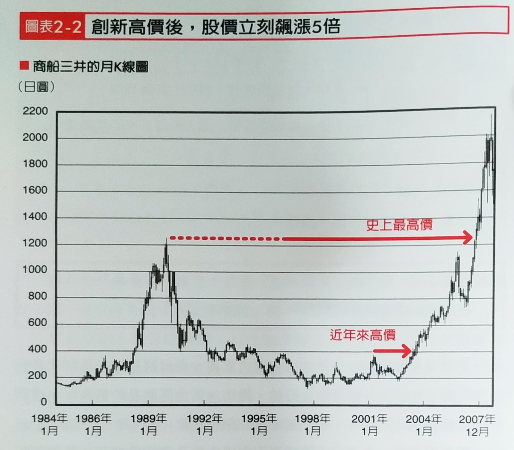
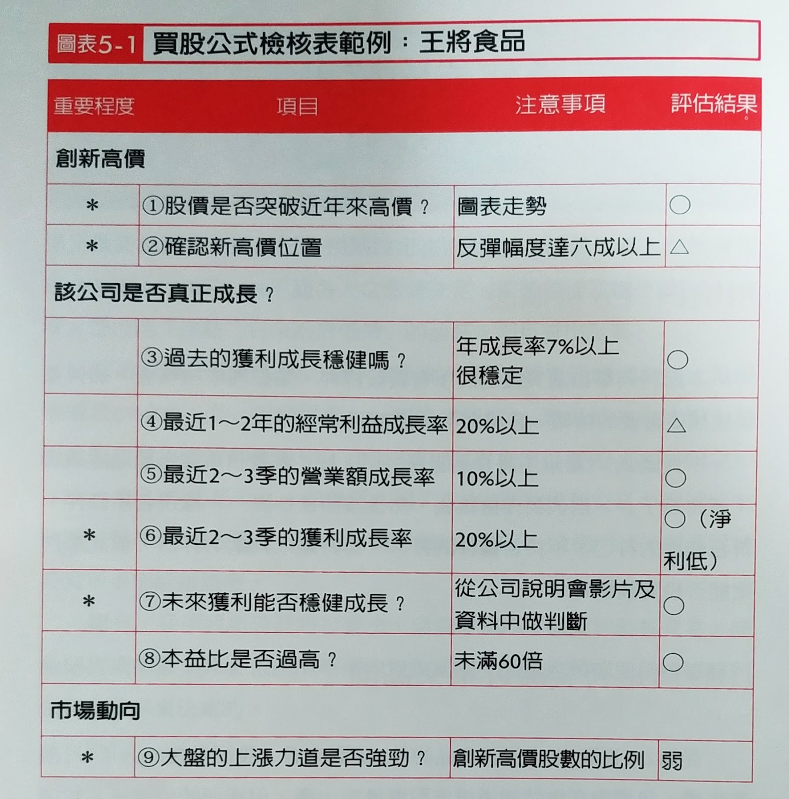
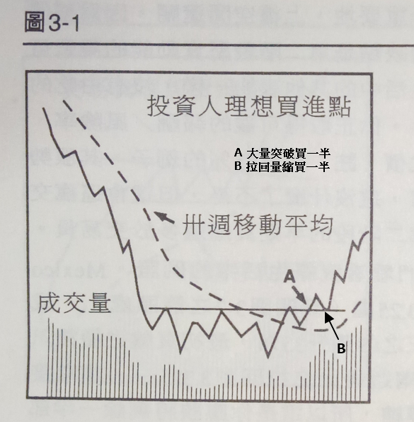
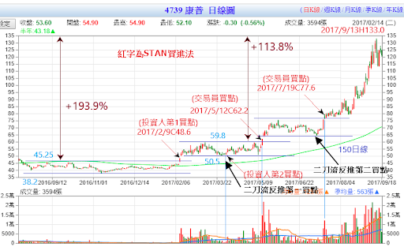
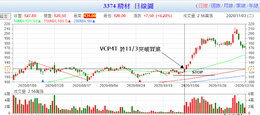

技術面選股
使用「產業大趨勢選股法」我們可以追蹤到一些我們關注的主題，但還有很多潛力的類股或股票是我們未曾關注的。此時，我們可以使用技術面來反推基本面，抓到更多的潛力股。
創近年新高
以下摘自「大漲的訊號/林則行」
[0001]

接著，就是本書的第一道獲利公式:
買股公式1：在股價創近年新高時買進。
不是只有個股創新高價才具有重大意義，像日經平均指數所代表的 股票市場、外匯、各國債券、石油、穀物、黃金等商品的新高價，也都有極大意義。換句話說，所有金融商品的新高價，都代表一大轉捩點。
新高價意指，企業或市場展現出與過去完全不同的樣貌:股價創新高，表示該公司進入全新時期;而指數創新高，代表該市場進入全新時 代。接下來我將以實例說明這個概念。
創新高，代表發生極大變化
我們一起來思考個股漲至新高價代表什麼意義，我以商船三井 (按:日本前三大海運公司，以淨利及市值計算則是日本第一大，是日 本四家擠進《財富雜誌》500大企業的其中一家)的股價走勢圖為例。請見圖表2-2，上頭已標出這支股票到2007年12月的「史上最高價」和「近年來高價」。
[0002]

商船三井的股價在2003年8月，突破了2001年6月創下的380日圓高價，這是近七年來的最高價格(近年來高價)。後來股價更在2007年10月攀升到2040日圓，是原先新高價的5倍之多。
相對於此，2006年12月股價突破了1990年1月創下的1161日圓高價，形成史上最高價。從那時起到2007年攀上最高價之間，短短不到一年，股價已成長了1.8倍。
嚴格來講，該公司從創下史上最高價的那一剎那，便開始迎向全新時期，所以照道理講應該選在此時進場。然而，如圖表2-2所示，此時才 進場已經太遲了，因為這支股票早在2002年11月價格跌到193日圓的谷 底後，就開始進入上升行情。用1161日圓的成本進場，等於是花最低價的6倍以上。因此「近年來高價」在股票投資策略中，是一個非常重要的概念。
股價突破史上最高價的時間點，雖然代表該公司即將發生根本性的變化，但股價突破過去兩年來的高價，也一定能代表該公司開始出現極大轉變。**「史上最高價」固然是進場的最適合時機，但「近年來高價」 是更好的進場時機。**股價創新高代表該公司體質已經產生蛻變;反過來 說，如非公司發生重大轉變，股價也不可能創新高。
發生了什麼變化?變得很賺錢
不是只有商船三井發生重大轉變，同時間海運業的相關指數也產 生了極大變化。這是由於中國經濟起飛，影響了各個領域的供需平衡，其中最具代表性的就是船運運費。中國若想從世界各地進口鐵礦石或穀物，就需要船隻載運，但造一艘船需要好幾年，船隻無法立即增加，因此當中國的進出口次數增加時，船隻數量就會不足，導致運費上漲。
從2002年到2007年，就發生了前所未有的運費漲幅。被稱為波羅的 海綜合指數(Balic Dry Index)的運費指數，在整個1990年代都在1000點與2000點之間來回擺盪，到了2002年卻開始急速上揚，2007年時已經超過一萬點。具體來說就是：波羅的海綜合指數從1999年2月的772點(最 低點)到2008年5月的11793點(最高點)，成長超過15倍。
當然，這是指現貨價格，長期契約價的漲幅有限。然而，既然是價格上漲了這麼多倍，就代表海運業者已經獲利。有一家海運公可董事甚至對我說:「現在是有史以來營運狀況最好的時候。」
商船三井的獲利也從經常利益334億日圓(2003年3月)，成長到3022億日圓(2008年3月期)，成長了9倍之多。這就是該公司股價能夠從最低價成長11倍的主因。
企業能夠迎接新時代的來臨，有時是因為時代變遷，顧客人數急遽增加，有時則是因為提供新服務或新商品，改變了企業形象。然而，「新時代」對投資人而言，定義更加明確——當企業迎接新時代，就代表「獲利達到一個與過去完全不同的成長階段」。
說得更白一點就是，投資人衡量企業的標準，是它賺不賺錢，因此公司進入新時代，代表「變得很賺錢」。投資人對企業獲利非常敏感，所以迎接新時代來臨的企業，股價才會創新高。反過來說，不賺錢或獲利不高的公司，會因為投資人敬而遠之，股價鮮有創新高的機會。
你在決定要不要投資時，首先要看的就是它是不是一支創新高價股(創近年新高)。幸運的是，股價是否曾創新高，在走勢圖上無所遁形，因此股價走勢圖是投資人掌握全局的基本工具。
買進檢核表
[0003]

STAN技術面
技術面操盤的老祖宗當屬STAN WEINSTEIN，在其「多空操作秘笈」中建議投資人有兩種買進法：投資人買進法(長線)、交易員買進法(短線)。投資人買進法概述為：大量突破30週平均線與型態時買進一半，量縮拉回時買進另一半。如下圖：
[0004]

為什麼我們不直接使用此法作為買進的方法？第一、這種理想的形態其實並不多見。第二、你所關注的股票，大概十支（或二十支）才會出現這種買點。第三、之前討論過的，大量之後主力便會在裡面折騰散戶。
我們不建議突破追高，但我們可以利用此種買點作為「反推基本面」，關注並研究此檔股票，如果認為確實不錯，則使用下法買進，如圖：
[0005]

VCP技術面
個人認為，這是唯一可以大量突破買進的買點。因為，經過充分的壓縮之後，它突破成功的機率非常高，而且它的突破點如３Ｃ騙局比一般突破點低很多，也就是停損的幅度較小，所以你一旦發現這股票有ＶＣＰ現象，你就反推其基本面，認為值得一試就盯著在大量突破時二刀流先買進一刀。請參考【VCP(價格波動收縮型態)】
那為什麼不直接就使用這方法就好？還是跟前面一樣，機會很少，不是每一個主力都那麼有耐心來給你玩這種震盪洗盤的遊戲。
台股VCP範例
[0006]
